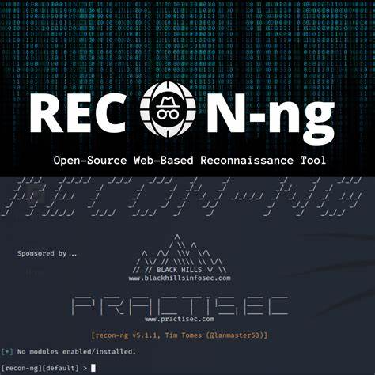

Recon-ng
Recon-ng é uma estrutura (framework) de código aberto para coleta de informações em operações de OSINT (Open Source Intelligence). Com uma interface semelhante a um console, ela permite automatizar tarefas de reconhecimento, integrando diversos módulos para coleta de dados sobre domínios, pessoas, redes sociais, hosts e muito mais.
Principais Funcionalidades:
- Interface modular com dezenas de módulos para diferentes tipos de coleta
- Automação de consultas em fontes públicas e APIs
- Armazenamento e gerenciamento de dados coletados em banco de dados integrado
- Exportação de resultados em múltiplos formatos
- Suporte a scripts e integração com outras ferramentas
Recomendado para:
Profissionais de segurança, analistas de OSINT, pentesters e investigadores que precisam automatizar e organizar o processo de coleta de informações em fontes abertas.
🔗 Site Oficial